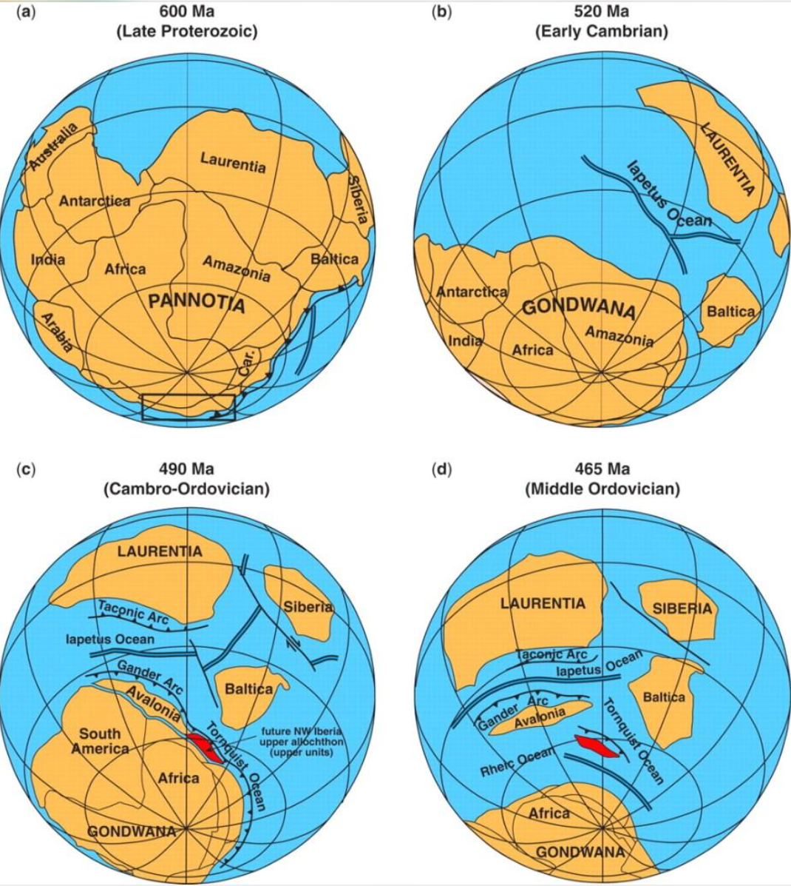

Gondwana
Gondwana fue uno de los grandes conjuntos continentales de la historia de la Tierra. Su ensamblaje comenzó hace aproximadamente 650 millones de años y continuó durante el Neoproterozoico y el Cámbrico, a medida que antiguos bloques continentales colisionaban y quedaban unidos.
Su nombre procede de la región de Gondwana, en el centro de la India, donde se identificaron formaciones geológicas que ayudaron a reconocer la historia compartida de territorios que hoy se encuentran separados por océanos.
La unión de antiguas tierras
Gondwana no apareció de una sola vez. Se formó mediante una sucesión de colisiones tectónicas que reunieron diferentes bloques de corteza. Estas colisiones produjeron cinturones montañosos y dejaron registros geológicos que todavía pueden estudiarse en varios continentes.
En su configuración se integraron grandes regiones que hoy forman África, Sudamérica, la Antártida, Australia e India, además de Madagascar y la península arábiga. La distribución de esos bloques cambió a lo largo de su extensa historia.
Hacia hace aproximadamente 540 millones de años, Gondwana estaba ampliamente ensamblado, aunque algunos procesos de unión y reorganización continuaron durante el Paleozoico.
Un continente de climas cambiantes
Durante cientos de millones de años, las regiones de Gondwana atravesaron distintos ambientes. Sus territorios incluyeron mares poco profundos, llanuras, desiertos, bosques y regiones sometidas a glaciaciones.
En ciertos intervalos del Paleozoico tardío, extensas partes de Gondwana estuvieron cubiertas por hielo. Los depósitos glaciales conservados en Sudamérica, África, India, Australia y la Antártida constituyen evidencias de que esas regiones estuvieron conectadas y compartieron una historia geológica.
La vida en Gondwana
A medida que la vida evolucionaba, los ambientes de Gondwana cambiaron junto con el clima y la geografía. Durante el Paleozoico tardío se extendieron ecosistemas terrestres con plantas y animales adaptados a diferentes regiones del continente.
En el Carbonífero tardío y el Pérmico, los fósiles de plantas como Glossopteris aparecen en territorios hoy separados, incluidos Sudamérica, África, India, Australia y la Antártida. Su distribución fue una de las pistas históricas para reconstruir la antigua conexión entre estas regiones.
Gondwana y Pangea
Durante el Paleozoico, Gondwana se acercó a otros grandes bloques continentales. Las colisiones con masas que hoy forman partes de Norteamérica y Europa contribuyeron a la formación de Pangea, un supercontinente que reunió casi todas las grandes tierras emergidas.
Gondwana no desapareció inmediatamente al formarse Pangea: continuó siendo una de sus principales regiones continentales. Su historia geológica siguió desarrollándose dentro de ese conjunto mucho mayor.
La fragmentación de Gondwana
Durante el Mesozoico, las fuerzas tectónicas comenzaron a separar progresivamente sus regiones. La fragmentación principal se inició hace alrededor de 180–160 millones de años, aunque el calendario varió según la zona.
- Sudamérica y África: se separaron gradualmente mientras se abría el océano Atlántico sur.
- India y Madagascar: se apartaron de otras regiones durante distintas etapas del Cretácico.
- Australia y la Antártida: mantuvieron una conexión durante mucho más tiempo y se separaron posteriormente.
La fragmentación no ocurrió simultáneamente en todas las regiones. Los movimientos de las placas y la apertura de nuevos océanos continuaron modificando el mapa terrestre durante millones de años.
¿Por qué es importante?
Gondwana permite comprender cómo se formaron algunas de las principales masas continentales actuales. Sus rocas, fósiles, montañas y antiguos depósitos glaciales conservan pruebas de una geografía que existió mucho antes de los mapas modernos.
Su historia conecta el ensamblaje de los continentes del Precámbrico con Pangea y con la posterior apertura de los océanos que terminaron configurando el mundo actual.